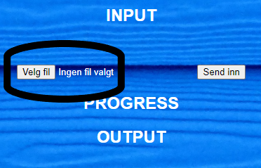
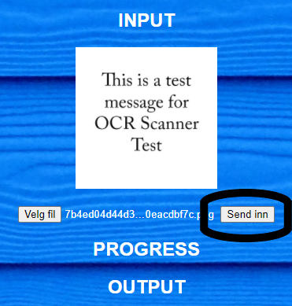
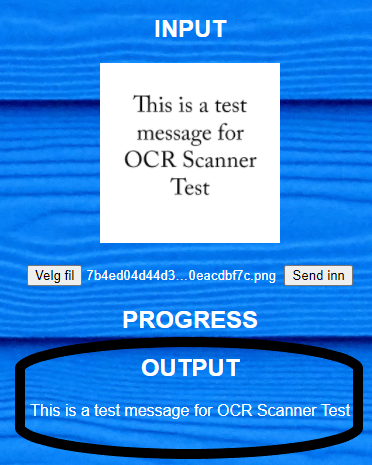

HOW TO USE THE SERVICE
UPLOADING YOUR PICTURE

THE FIRST STEP IN THE PROCESS OF CONVERTING YOUR PICTURE, IS TO SELECT THE CHOSEN FILE. CLICK THE "VELG FIL" BUTTON TO OPEN FILE DISCOVERY AND SELECT YOUR PICTURE.
START THE CONVERSION

ONCE YOU HAVE SELECTED YOUR PICTURE, THE NEXT STEP IS TO START THE CONVERSION. CLICK THE "SEND INN" BUTTON TO PROCEED.
RETRIEVE THE TEXT

ONCE TEXT APPEARS IN THE BOTTOM OF THE INTERFACE YOUR TEXT IS READY. COPY IT AND YOU ARE GOOD TO GO!